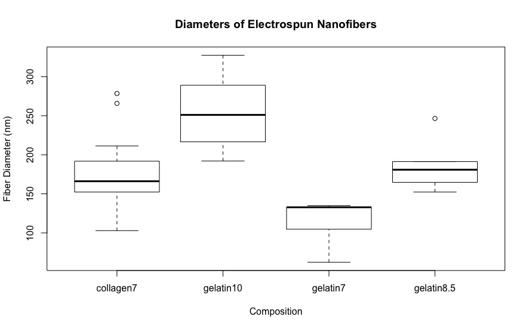

Work Experience
Engman Lab Fellowship, Engman Bioengineering Lab
I worked for two summers, and the intervening semesters, in Professor Elizabeth Orwin's Engman Bioengineering Lab. I contributed to, and then led, a project working to optimize the phenotype of corneal keratocytes in vitro by varying the composition of the extracellular matrix. Ultimately, our goal is to choose the composition of extracellualr matrix which would be best suited for use in tissue engineering a cornea. Worked developed by Briana Liu and I was presented at the European Chapter Meeting of the Tissue Engineering and Regenerative Medicine International Society, Davos Switzerland, June 2017. The poster we presented can be found here. The abstract we submitted is below:
Fiber Diameter of Electrospun Collagen, Gelatin, and PLLA/laminin Nanofibers in the Production of a Bioengineered Cornea
INTRODUCTION. The cornea is composed of an extracellular matrix of collagen nanofibers. These collagen nanofibers are highly aligned, with uniform fiber diameter. This structure provides support for corneal cells, and also provides an input signal to corneal cells. Changes to the structure of the matrix can affect cell phenotype (Phu, et al. 2010). We aim to optimize the phenotype of corneal keratocytes in vitro by varying the composition of the extracellular matrix. 
METHODS. Three different compositions were tested: collagen, gelatin, and blended poly(L-lactic) acid/laminin, a synthetic polymer blended with laminin to increase cell attachment and viability. Nanofiber mats were created by electrospinning solutions of polymer dissolved in acetic acid (collagen, gelatin) or HFP (PLLA/laminin samples). Protocols were refined to obtain consistent fiber diameter between polymers and mat thickness viable for cell seeding.
RESULTS. A 7% w/v solution of collagen was spun to create reference mats, which were analyzed to obtain an average fiber diameter of 176.6 ± 54 nm. To maintain constant fiber diameter between polymers, multiple concentrations of gelatin and PLLA/laminin were tested until the differences were found to be statistically insignificant. An 8.5% gelatin solution gave an average of 186.1nm, and had no statistical difference from the collagen reference. Similar concentrations of PLLA/laminin samples gave variable fiber diameters in the 300-500 nm range. We will refine protocols and decrease concentration.
DISCUSSION. Using these protocols, we will create nanofiber mats of consistent fiber diameter between these compositions, eliminating fiber diameter as a possible input signal. We will seed cells on these mats and analyze their response in order to determine which polymer is optimal for the eventual synthesis of a bioengineered cornea. This study will also answer fundamental questions of cellular response to nanoscale extracellular matrix features, which will inform tissue-engineering studies more broadly.
President, Mudd Makerspace
The Harvey Mudd Makerspace is both a student club and resource available to students who wish to work on extra-curricular projects. It is both a space where students can work, find tools, and store their projects, as well as a club, which profides funding for projects and runs workshops for students. After serving for a year as Organizational Manager of the Makerspace, I became Co-Persident of the Makerspace with another student, Andrew Bishop. In taking charge of the Makerspace, we chose to revise many of our policies, with the aim of making the Makerspace safer and more accessible. We met with chemical and facilities saftey officials within Mudd, and redeveloped the safety policies. We instituted a more secure storage system for power tools, and required a buddy system for their use, as well as making explicit the policies surrounding flammables storage and rocketry activities. In addition, we streamlined the process for acquiring funding, getting reimbursed, and submitting feedback. Finally, we collected our policies and information on an easily accessible website: makerspace.hmc.edu/.
So far this year, we have funded more than twenty student projects involving over 50 students. Our space has granted swipe access to 212 people- roughly one fourth of the student body, and we expect that more students use the space than have formal swipe access. In my work with the makerspace I have pushed to make the space welcoming and accessible to students of all types and prior experiences levels. In revising project funding, I've included options which allow students to complete projects without waiting for reimbursement, making projects accessible regardless of income level. Our tutorials focus on building familiarity with different tools, and assume no prior knowledge. In addition, I have pushed to expand the tools and resources the Makerspace offers beyond electronics. We now have a full sewing workstation, and plan to begin a sewing machine check-out program which will allow students the time and access to work on larger, more time-intensive projects.
Engineering Design and Manufacturing Proctor, HMC Department of Engineering
In addition to normal duties as proctor, I worked with another proctor, Fernando Fernandez, to design two multi-class labs. The first provided an introduction to predictive modeling. Students would take experimental data of performance of different motors, and be tasked with creating models to predict which motor would most cost-effectively fulfill a task. The second was an introduction to multiple levels of prototyping. Students would become familiar with both the principle and process of 3D scanners, FDM and SLA 3D printers, laser cutters, CNC mills, and vacuforming. This would include hands-on use or demonstration of each machine, as well as cost-benefit analysis of different methods of prototyping for different quantities and materials. These labs would increase student's familiarity with predictive modeling, and give students the ability to make informed choices between methods of prototyping. While I had to relinquish this position to other responsibilities towards the end of the process, Fernando and I did all of the design and planning of these labs and their structure and learning objectives.
Co-Organizer, MuddHacks
Worked with another student to organize and execute Harvey Mudd's 2017 Hardware Hackathon, Muddhacks. I worked to contact sponsors and fundraise for the event, publicize the event to students, and lead events during the hackathon. I served as a mentor to teams, especially in initial design and parts selection. Almost 60 teams participated, with a total of 217 students (of a student body of 844). I will head the organization of next year's Muddhacks.
Proctor and Grader, Harvey Mudd College
Proctor, Experimental Engineering, Spring 2018
Proctor, Engineering Systems, Fall 2017
Proctor, Engineering Design and Manufacturing, Fall 2016, Spring 2017
Grader, Mechanics and Wave Motion, Spring 2017